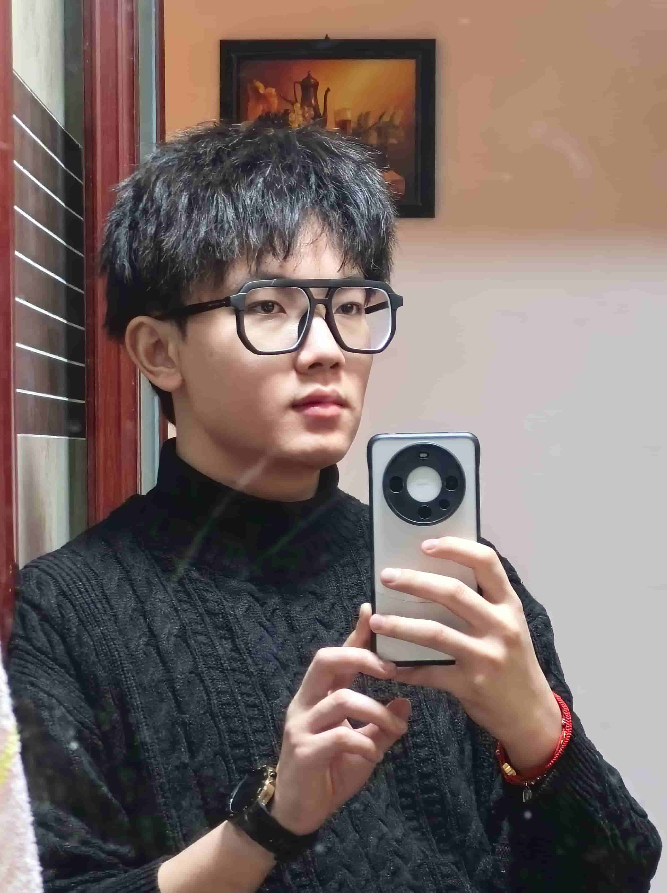

孙艺珂 (Yike Sun), born in Chengdu, Sichuan, China in 1999, received his bachelor's degree
in engineering from the School of Computer Science and Engineering of Northeastern University (China)
in 2020 and his doctor's degree in engineering from the School of Biomedical Engineering of Tsinghua University
in 2025.
He was supported by Postdoctoral Innovation Talents Support Program of MOHRSS and Young Elite Scientists
Sponsorship Program for doctoral students of CAST. The main research direction is brain-computer interface
(BCI) system. Covering non-invasive and minimally invasive directions.